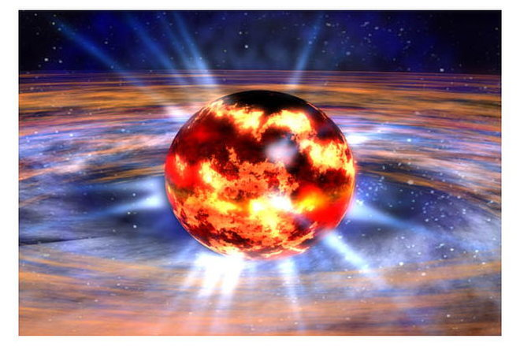
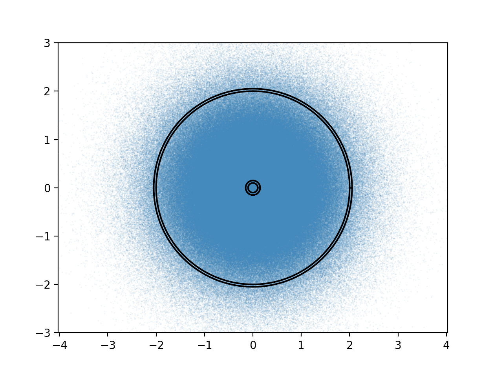

Du må bruke presentasjonsmodus/fullskjermsvisning for å lese denne, men du skal ikke bruke frem/tilbake-knappene, KUN knappene som dukker opp på sliden for å ta deg videre! Ofte må du laste filen ned til maskinen din og åpne den der for å få til dette. Merk at noen knapper vil åpne nettskjema, videoer eller andre ressurser i internettbrowseren din. Når du gjør det riktig, skal du kun se en side av gangen, og når du trykker på knappene som dukker opp på skjermen så skal disse ta deg frem/tilbake i dokumentet. Du vil miste mye læringsutbytte hvis du ser flere slides av gangen. Får du det ikke til, spør foreleser/gruppelærer!
Trykk denne knappen for å begynne
Dette er en erstatning for forelesningen i emnet. Har du gått skikkelig gjennom disse interaktive forelesningsnotatene så trenger du ikke å lese de fulle forelesningsnotatene (med unntak av oppgavene bak). All informasjonen du trenger, får du her. Du kommer til å få mange grublespørsmål og diskusjonsoppgaver, det er meningen at disse skal gjøres i grupper av minst 2, maks 4 studenter. Det er defor sterkt anbefalt at dere sitter sammen i grupper når dere går gjennom disse interaktive forelesningsnotatene, du vil få betydelig mer utbytte av dem på den måten. En god ide kan være å bli enige om å treffes til den faste forelesningstiden og bruke forelesningslokalet som kommer til å være resevert til dette. Hvis du har kommentarer ris/ros til disse forelesningsnotatene eller til emnet, trykk på 🙂 🙁 knappen som du finner på alle sider.
Trykk denne knappen for å begynne
Forrige side

Velkommen til del 1G! Her skal vi en tur innom kvanteverdenen. Når vi senere skal lære om døende stjerner så trenger vi å forstå litt om gasser som har ekstremt høy tetthet. Disse gassene oppfører seg ikke lenger som ideele gasser. Faktisk ikke i det hele tatt. Det skal vi se på her. Men for å forstå det, trenger vi bittelitt kvantefysikk. Deltajene om dette får du i senere semester.(illustrasjon: En nøytronstjerne består av degenerert kvantegass (NASA/Dana Berry)Neste side
Neste side
Forrige side🙂 🙁Introduksjon
Vi begynner som vanlig... ...med litt brainstorming. Som det er svært viktig at du gjør før du går videre.
Trykk her for å varme opp
Er du klar og har sendt inn skjemaet? Nei Ja
Nytt tema:
p⃗-rommet
p⃗-rommet, hæ? Nå ble jeg nysjerrig her...
Forrige side🙂 🙁p⃗-rommet
I dette kapitlet skal vi se på gasser med svært høye tettheter og de spesielle egenskapene slike gasser har. Det som er spesielt ved disse gassene, som ved disse tetthetene ikke lenger oppfører seg som ideele gasser, er at kvanteeffekter mellom partiklene i gassen slår inn. Vi skal ta en liten forhåndskikk ned i kvanteverdenen, selv om det er først neste semester at du virkelig kommer til å lære dette. I denne delen av kurset må du altså godta en del ting som du kommer til å få bevist/forklart neste semester. Grunnen til at vi ser på slike gasser her er at vi senere kommer til å bruke resultatene fra denne delen av kurset. Når vi skal se på hva som skjer med døende stjerner så kommer vi til å få tettheter som er så høye at gassen får de egenskapene vi nå skal snakke om. Neste side
Forrige side🙂 🙁p⃗-rommet
Merk at de vanlige forelesningsnotatene her går ganske mye lenger enn det som du trenger i AST2000. Fra i år så er dette å regne som tilleggsstoff for de som er ekstra interessert. Det som er pensum i 1G er det som kommer i dette interaktive forelesningsnotatet. Også ukeoppgavene i 1G bortfaller. Isteden vil du få brukt stoffet i oppgavene for del 3E som kommer senere. Neste side
Forrige side🙂 🙁p⃗-rommet
I moderne fysikk er det vanlig å gi en gasspartikkel en posisjon i et 6-dimensjonalt rom, det såkalte faserommet. De 3 første dimensjonene er de vanglige romlige dimensjonene, de 3 siste er komponentene px, py, pz til bevegelsemengden. Hvis partikkelen din er i posisjon r⃗ i rommet og har bevegelsesmengde p⃗, ja da har du en 6D-posisjon til partikkelen din: (r⃗,p⃗) Partikkelen har altså en posisjon r⃗ i det virklelige rommet og en posisjon p⃗ i bevegelsesmengderommet eller p⃗-rommet. I denne videoen
får du vite mer om dette 6-dimensjonale rommet og hvordan vi plasserer partikler der, Neste side
Forrige side🙂 🙁p⃗-rommet
Vi har altså sett oss ut en kubikkmeter av gassen vår og plassert alle gasspartiklene både i vårt vanlige 3D-rom, på (x,y,z) aksene og i p⃗-rommet langs (px,py,pz)-aksene. Vi antar at vi har ideel gass. I det vanlige rommet så er partiklene helt jevnt fordelt i rommet inne i kubikkmeteren. Tenk deg at du fysisk har tegnet de 3 (px,py,pz)-aksene og plottet inn alle partikle fra kubikkmetern med gass. Hvordan ser nå tegningen din ut?
Partiklene er jevnt fordelt utover
Partiklene er konsentrert i origo og det blir færre utvoer fra origo
Det er nesten tomt i origo og så blir det flere og flere utover
Partiklene er konsentrert i et skall rundt origo med færre innover og utover
Forrige side🙂 🙁p⃗-rommet
Godt forsøk, men det ble ikke helt riktig. HINT: Husker du Maxwell-Boltzmanns fordelingsfunksjon for hastighetskomponenter? Bevegelsesmengde er jo bare massen ganger denne hastighetskomponenten, så fordelingen bør vel være ganske like? Tegn opp sannsynlighetsfordelingen av px med alle mulige verdier for px på x-aksen og sannsynlighet på y-aksen. Gjør tilsvarende for py og pz. Hjelper det? Gå tilbake og prøv på nytt.
Forrige side🙂 🙁p⃗-rommet
Flott! Det er helt riktig. Men hvorfor blir det slik?? Du lærte noe om dette i den første delen av kurset! Når du har et forslag, trykk her!
Forrige side🙂 🙁p⃗-rommet
Husker du denne figuren fra del 1A??
Den viser histogrammet av partikler med forskjellige hastigheter i x-retning, Maxwell-Boltzmannfordelingen for hastighetskomponenter! Bevegelsesmengde er jo bare px = mvx slik at dette i praksis også er fordelingen av bevegelsesmengder. Dermed har vi flest beveglesesmengder nær 0 og færre og færre utover. Helt tilsvarende for py og pz. I en ideel gass bør derfor partiklene være konsentrert nær origo i (px,py,pz)-rommet siden det er der de har størst sannsynlighet for å være. Var det klart? Hvis ikke, spør foreleser! Neste side
Forrige side🙂 🙁p⃗-rommet
Men stopp en hal!. I del 1A hadde vi vel også et slikt histogram:
Her ser vi sannsynligheten for at en partikkel har absoluttverdi p (p = mv) av bevegelsesmengden. Her ser vi helt tydelig at vi har en topp som er et stykke vekk fra 0. Men får vi ikke da et helt annet resultat? Hvis vi har størst sannsynlighet for å ha en absoluttverdi p som er større enn 0 (toppen i histogrammet her), hvorfor blir det da ikke sånn at svaret på foregående grublis blir at partiklene blir liggende i et kuleskall med færre partikler innenfor og utenfor skallet? Et det ikke det som denne figuren sier oss? Mens histogrammet for px, py og pz sier oss at det bør være flest i origo? Motsier histogrammene hverandre? Neste side
Forrige side🙂 🙁p⃗-rommet

I figuren ser du Maxwell Boltzmann fordelingen i 2 dimensjoner. Gaussisk i begge komponenter med topp i origo! Du ser også to skall. Det innerste skallet er i en radius p1 fra sentrum, for en bevegelsesmengde p1 som er liten. Siden den er liten er det høy sannsynlighet for å ha denne bevegelsesmengden ifølge Maxwell Boltzmann, og vi ser at det er veldig tett med partikler der. Det ytterste skallet viser partikler med bevegelsesmengde p2. Her er det ikke så mange partikler siden vi er langt vekk fra origo. Men innser du at det kanskje kan være minst like mange og kanskje flere partikler innenfor dette skallet? Rett og slett fordi området som skallet omfatter er større og får da med flere partikler selv om det er mindre tetthet av partikler her?
Nettopp derfor har n(p) en topp som er et stykke ut fra origo, mens fordelingen i hver av de 3 dimensjonene har topp i origo. Hang du med? I de neste par sidene går vi litt utenfor pensum for de som er litt ekstra interessert. Neste side
Forrige side🙂 🙁p⃗-rommet
(Det som kommer på denne og de kommende brune sidene er litt på siden av pensum, mest for deg som vil forstå litt mer. Det kan også hende at disse sidene gir mer mening etter at du har kommet gjennom hele 1G, så kom gjerne tilbake igjen hit når du er ferdig med 1G. Du kan altså hvis du vil, hoppe over de brune sidene uten å miste noe viktig)
For å løse motsigelsene her, la oss gå et øyeblikk tilbake til sannsynlighet- og antalltetthetene fra 1A:
P(px) gir oss sannsynlighetstettheten for at en partikkel har bevegelsesmengde px. For å få sannsynlighet må vi gange med dpx. Helt tilsvarende med antalltettheten n(px) = nP(px) der n er antall partikler per volum. For å få et faktisk antall per volum må vi da gange opp: n(px)dpx.
Antalltettheten av partikler med bevegelsesmengde p⃗ er n(p⃗) = n(px)n(py)n(pz). Men for å få et faktisk antall per volum må vi igjen gange opp med intervallet dpxdpydpz: n(p⃗)dpxdpydpz = n(px)n(py)n(pz)dpxdpydpz.
Legg merke til at dpxdpydpz er volumet av en boks i p⃗-rommet! Vi må gange opp sannsynlighetstettheten P(p⃗) eller den tilsvarende antalltettheten n(p⃗) med et 3D-intervall i p⃗-rommet slik som dpxdpydpz for å få sannsynlighet eller antall partikler (per fysisk volum) for partikler i dette bevegelsesmengdeintervallet.
Forrige side🙂 🙁p⃗-rommet
Vi kan altså tolke n(p⃗) = n(px)n(py)n(pz) som en 6-dimensjonalt tetthet: antall partikler per fysisk volum per volum i p⃗-rommet. Hvis vi vil ha antall partikler per volum innenfor et bevegelsesmengdeintervall med ΔpxΔpyΔpz så må vi gange opp med dette p-volumet for å få antall partikler per (vanlig) volum.
La oss skrive det slik: $$n(\vec{p})=\frac{N}{VV_p}$$ der N er antall partikler i gassen per fysisk volum V (f.eks. 1m3) som har en bevegelsemengde innenfor et intervall i p⃗-rommet angitt av volumet Vp i p⃗-rommet. Var det forståelig? Neste side
Forrige side🙂 🙁p⃗-rommet
Hva hvis vi vil ha antalltettheten av partikler med absoluttverdi mellom p of p + dp av bevegelsesmengden? Altså alle partikler med absoluttverdi p av bevegelsesmengden. Disse befinner seg vel på et skall i avstand p fra origo i p⃗-rommet med tykkelse dp? Volumet Vp av et slikt kuleskall er vel 4πp2dp? Hvis vi ganger opp antalltettheten n(p⃗) med dette volumet Vp, så får vi antall partikler per fyisk volum V med absoluttverdi av bevegelsesmengde mellom p og p + dp? Altså n(p⃗)4πp2dp.
La oss gå tilbake til del 1A: Husker du definisjonen av n(p)? Var ikke den også slik at hvis vi ganger den med dp, altså n(p)dp er dette også antall partikler per (fysisk) volum med absoluttverdi av bevegelsesmengde mellom p og p + dp? Begge uttrykkene gir det samme: n(px)n(py)n(pz)4πp2dp = n(p)dp Som vel betyr at n(p) = n(px)n(py)n(pz)4πp2 Neste side
Forrige side🙂 🙁p⃗-rommet
Denne er tatt rett fra del 1A (men merk at dette er sannsynlighetstettheter for hastighet, mens vi har antalltettheter for bevegelsesmengde, men du skulle nå vite hva forskjellen er): $$P(v) = \left(\frac{m}{2\pi kT}\right)^{3/2}e^{-\frac{1}{2}\frac{mv^2}{kT}}4\pi v^2\ \ P(v_x) = \left(\frac{m}{2\pi kT}\right)^{1/2}e^{-\frac{1}{2}\frac{mv^2_x}{kT}}$$ Ser du at vi har utledet P(v) fra P(vx), eller n(p) fra n(px) om du vil? Ser du nå hvor faktoren 4πv2 kommer fra? Er du usikker, spør gjerne foreleser. Neste side
Forrige side🙂 🙁p⃗-rommet
Men hva i alle dager hadde dette å gjøre med motsigelsen vår?? Er det flest partikler konsentrert i origo i p⃗-rommet slik n(px) indikerer eller er tettheten av partikler i p⃗-rommet størst i et kuleskall slik som n(p) indikerer? Ser du løsningen nå? Kanskje...
Ser du at antalltettheten n(p) avhenger av fordelingen n(px), n(py) og n(pz) av komponentene samt volumet av et kuleskall 4πp2dp? Fordelingen i p⃗-rommet må være gitt av n(px), n(py) og n(pz), altså de Gaussiske fordelingene med topp i origo! Men hvorfor har da n(p) en topp på en p som er større enn 0? n(p) sier jo at det er flere partikler med p nær toppen i n(p) enn det er partikler veldig nær origo?JA, det er helt riktig, FORDI volumet av kuleskallet er større for større p!. Du vil altså se en opphoping av partikler rundt origo i p⃗-rommet, MEN det vil likevel være flere partikler totalt som har en p som ligger et stykk lenger ut fra origo, fordi volumet av kuleskallet som rommer disse p-verdiene er større selv om tettheten av partikler i dette området av p⃗-rommet er lavere.
Skjønner?? Hvis ikke så er det ikke så farlig, dette var som sagt en liten digresjon for deg som ønsker å forstå litt mer i dybden. Nå skal vi fortsette med pensum her. Og hvis du ikke hang helt med men har lyst til å forstå, les resten av 1G og kom så tilbake til de brune sidene, da blir det kanskje klarere...
Forrige side🙂 🙁p⃗-rommet
Når en partikkel endrer hastighet/bevegelsesmengde så vil den dermed også endre posisjon i dette p⃗-rommet, enig?. Den “beveger seg” i p⃗-rommet til en ny (px,py,pz)-posisjon. Merk at dette ikke har noe med en fysisk bevegelse å gjøre men er et uttrykk for endring i bevegelsesmengde. Skjønner?
Hvis vi nå senker temperaturen til den ideele gassen vår, hvordan “beveger” da partiklene seg i dette p⃗-rommet?
I en tilfeldig (Gaussisk fordelt) retning
I en tilfeldig (uniformt fordelt) retning
Innover mot origo
Utover, vekk fra origo
Mot et skall i p⃗-rommet som tilsvarer den nye temperaturen
Forrige side🙂 🙁p⃗-rommet
Det ble galt! Tenk deg denne Maxwell-Boltzmann-fordelingen for en høy temperatur og deretter for en lav temperatur. Tegn begge to for px. Hva er forskjellen? Hvordan må partiklene bevege seg for å få til denne forskjellen?
Forrige side🙂 🙁p⃗-rommet
Flott! Det er helt riktig. Siden lavere temperatur betyr at hastighetene og dermed bevegelsesmengdene generelt er lavere, så får partiklene altså mindre verdier for p-komponentene og vil dermed bevege seg mot origo i p⃗-rommet som betyr at det nå har en tilstand med lavere bevegelsesmengde. En annen måte å se det på er jo å innse at Maxwell-Boltzmann-fordelingen for lavere temperatur er smalere omkring 0 (fordi partiklene har lavere hastighet). Hvis partiklene skal gå fra en bredere fordeling til en smalere, så må de “bevege” seg inn mot origo. Neste side
Forrige side🙂 🙁p⃗-rommet
Så hva skjer så med gasspartiklene i p⃗-rommet når temperaturen går mot 0?? Jeg tror jeg vet det!!!
Forrige side🙂 🙁p⃗-rommet
Nettopp ja, de samler seg alle sammen i origo, som betyr bevegelsemengde på 0, ikke sant? Når temperaturen går mot 0 så stopper partiklenes bevegelse opp og bevegelsesmengde til alle partiklene går mot 0. Og hvis $\vec{p}=\vec{0}$ da er partiklene i origo i p⃗-rommet.Ja, og så da...
Men kvantefysikk hindrer partiklene i å samle seg i origo i p⃗-rommet! Ifølge kvantefysikken, kan ikke partiklene ha 0 hastighet eller bevegelsesmengde! Og ikke bare det! Er du klar for et lite dypdykk inn i kvanteverdenen? I denne videoen
får du vite det rare som skjer i p⃗-rommet og de store konsekvensene dette har for oppførselen til en gass ved lave temperaturer. (Lave temperaturer sier du? Skal ikke vi se på varme stjerner? Følg med, følg med, så får du svar...) Neste side
Forrige side🙂 🙁p⃗-rommet
La oss oppsummere det vi gikk gjennom i videoen: Bevegelsesmengden er kvantisert, dvs. at et elektron (eller et annet fermion) i en gass kun kan ha bevegelsesmengde i f.eks. x-retning som px = Nxp0 hvor Nx ≥ 1 er et heltall og p0 er en minste mulige bevegelsesmengde (hva denne er skal vi ikke komme nærmere inn på). Helt tilsvarende for pyog pz slik at bevegelsesmengden til elektronet kan angies som p⃗ = (Nx,Ny,Nz)p0 Kun 2 elektroner som har hvert sitt kvantespinn kan ha en tilstand (Nx,Ny,Nz). Hvis to elektroner har denne tilstanden, må et annet elektron fint finne seg i å finne andre heltall (Nx,Ny,Nz) som ikker allerede er opptatt. Når temperaturen går mot 0, vil alle partiklene i kubikkmeteren vår hope seg opp i boksene rundt origo helt ut til Fermi-bevegelsesmengden p Fermi. Når gassen er helt degenerert så ligger alle elektronene stappet sammen innenfor en kule med radius p Fermi i p⃗-rommet. Da kan elektronene ikke ha lavere bevegelsesmengde, siden det ikke finnes ledige bokser innenfor kula med radius p Fermi. En gass hvor de fleste boksene innenfor denne kula (men ikke alle) er opptatt kalles en delvis degenerert gass (eller bare degenerert). Neste side
Brennsterk kaffe takk!
Hjernen trenger et spark bak nå! Dette stoffet må fordøyes litt før vi går videre. Ut å gå en lengre tur mens du prøver å se for deg hvordan du beveger deg i p⃗-rommet mens du går! Ihvertfall 20 min...
Nytt tema:
Trykket i degenerert gass
Forrige side🙂 🙁Trykket i degenerert gass
Vi skal i de følgende sidene prøve å finne tilstandslikningen for en degenerert gass. Husker du tilstandslikningen for ideel gass? Den var P = nkT. Tilstandslikningen sier altså noe om sammenheng mellom trykk, tetthet og temperatur. Når vi senere skal regne på døende stjerner som kollapser så trenger vi å finne et uttrykk for trykket i denne gassen som er det som prøver å motstå de enorme gravitasjonskreftene i en kollaps. Men for å finne trykket, trenger vi å regne litt på et par ting først:
For en helt degenerert gass, prøv få finne et uttrykk for Fermi-bevegelsesmengden p Fermi uttryket ved antall-tettheten ne av elektroner i gassen (dette er antall elektroner per kubikkmeter) samt naturkonstanter. HINT: anta at sidelengdene på de kvantiserte boksene i p⃗-rommet er h der h er Plancks konstant. Jeg har tenkt litt og kommet frem til et svar!
Forrige side🙂 🙁Trykket i degenerert gass
Fikk du:
$p_\mathrm{\,Fermi}=\left(\frac{3hn_e}{8\pi}\right)^{1/3}$
$p_\mathrm{\,Fermi}=\left(\frac{3n_e}{8\pi}\right)^{1/3}h$
$p_\mathrm{\,Fermi}=\left(\frac{3n_e}{4\pi}\right)^{1/3}h$
$p_\mathrm{\,Fermi}=\left(\frac{3n_e}{4\pi}\right)^{1/3}h^2$
$p_\mathrm{\,Fermi}=\left(\frac{3n_eh^3}{8\pi}\right)^{1/2}$
Forrige side🙂 🙁Trykket i degenerert gass
Det var nok ikke helt riktig! Hva er volumet av en kule med radius p Fermi? Og hvis denne kula er fylt med kvadratiske bokser med sidelengder h, hvor mange bokser er det plass til i en slik kule? Og husk at det går 2 elektroner i hver boks... Hvor mange elektroner får vi da totalt innenfor kula? Og husk at dette er alle elektronene per kubikkmeter siden ingen har bevegelsemengde større enn p Fermi når gassen er helt degenerert?
Forrige side🙂 🙁Trykket i degenerert gass
Det var helt riktig. Volumet av kula er $\frac{4}{3}\pi p_\mathrm{\,Fermi}^3$ mens volumet av en boks er h3, og så er det 2 elektroner i hver boks. Løsningen av det blir helt riktig: $$p_\mathrm{\,Fermi}=\left(\frac{3n_e}{8\pi}\right)^{1/3}h$$ Hvis du forstod dette kan du gå videre. Hvis ikke, må du kontakte foreleser og spørre. Det har ingen mening å gå videre hvis du ikke forstod så langt. Jeg henger med og er klar for neste side
Forrige side🙂 🙁Trykket i degenerert gass
Er du enig i at vi nå ikke lenger har en ideel gass? Det bør ihvertfall være helt klart at vi ikke lenger har en Gaussisk Maxwell-Boltzmann-fordeling, er du enig? Ja, jo, det er tydelig det!Njaaaaaaa...
Hvis du nå plotter fordelingen av partikler i f.eks. px retning er du enig i at fordelingen plutselig går helt til 0 for p > p Fermi? Ingen partikler har vel px større enn p > p Fermi når den er helt degenerert? Er dette forenlig med en Gaussisk fordeling i px slik vi hadde for ideel gass? Hvis du ikke forstår dette, kontakt forelser nå før du går videre. Dette må du ha klart for deg for å kunne forstå resten.Nå ser jeg det!
Hvis du nå er enig i at vi ikke lenger har ideel gass, så er du vel litt nysjerrig på hva gasstrykket er i en slik gass? For ideel gass var den jo P = nkT. For å finne trykket, trenger vi trykkintegralet som vi utledet for noen uker siden, hvordan var nå det igjen... var det ikke $$P=\frac{1}{3}\int_0^\infty pvn(p)dp$$ ??? Jeg henger med og er klar for neste side
Forrige side🙂 🙁Trykket i degenerert gass
Jasså, vi skal altså bruke trykkintegralet $$P=\frac{1}{3}\int_0^\infty pvn(p)dp$$ til å finne trykket i den degenererte gassen. Hvordan blir nå det her...Neimen om jeg veit...
Ikke det?? La oss tenke litt: Vi trenger å finne fordelingsfunksjonen n(p), altså antalltettheten av gasspartikkel med bevegelsesmengden p. For en ideel gass var jo dette Maxwell-Boltzmann-fordelingen. Nå har vi allerede innsett at dette ikke er Maxwell-Boltzmann. Men hva i *#!$%**!# er det da? Neimen om jeg veit, sa jeg jo?
Neivel, men kanskje vi kan finne det ut? Alle partiklene som har en bevegelsesmengde mellom p og p + dp ligger vel på et infinitisemalt tynt kuleskalll med tykkelse dp i avstand p fra origo. Kan du være med på det? Smak på den setningen en gang til. Og en gang til. Begynner det å demre? Det gjør detDenne var litt hard å tygge på...
Forrige side🙂 🙁Trykket i degenerert gass
Et elektron med bevegelsesmengde p⃗ (med størrelse p) ligger vel et eller annet sted på kulen med radius p omkring origo i p⃗-rommet? Og helt tilsvarende: Et elektron med bevegelsesmengde p + dp ligger vel et eller annet sted på kulen med radius p + dp omkring origo i p⃗-rommet? Dermed vil alle elektroner med en absoluttverdi av bevegelsesmengde mellom p og p + dp ligge et sted i det infinitesimalt tynne skallet med tykkelse dp i avstand p fra origo? Hvis du ikke forstår, kontakt foreleser før du går videre? Neste side
Forrige side🙂 🙁Trykket i degenerert gass
Greit. Men da kan du vel fint finne ut hvor mange elektroner som har bevegelsesmengde mellom p og dp? Hint: Hvis du kjenner volumet av kuleskallet og kjenner volumet av en boks... Nå vil jeg at du skal skrive opp et forslag til n(p) for elektronene i den helt degenererte elektrongassen. Dette blir en funksjon med delt forskrift. Ikke trykk før du har et forslag. Hvis du har forstått dette så er det rett frem... Nå har jeg skrevet ned et forslag.
Forrige side🙂 🙁Trykket i degenerert gass
Fikk du: $$n(p)=
\begin{cases}
0 & p>p_\mathrm{\,Fermi}\\
\frac{8\pi p^2}{h^3} & p\leq p_\mathrm{\,Fermi}
\end{cases}$$ Kan du da regne ut trykket i en helt degenerert gass? Trykkintegralet var $$P=\frac{1}{3}\int_0^\infty pvn(p)dp$$ og sammenhengen mellom bevegelsesmengde og hastighet er den samme som alltid. Nå har jeg integrert og funnet et svar.
Forrige side🙂 🙁Trykket i degenerert gass
Fikk du:
$P=\frac{8\pi p_\mathrm{\,Fermi}^5}{15m_eh^3}$
$P=\frac{8\pi p_\mathrm{\,Fermi}^4}{5m_eh^3}$
$P=\frac{8\pi p_\mathrm{\,Fermi}^5}{3m_eh^3}$
$P=\frac{8\pi p_\mathrm{\,Fermi}^3}{5m_eh^3}$
$P=\frac{4\pi p_\mathrm{\,Fermi}^5}{3m_eh^3}$
der me er elektronmassen.
Forrige side🙂 🙁Trykket i degenerert gass
Det ble ikke helt rett. Dette skulle være et standard integral, prøv igjen!
Forrige side🙂 🙁Trykket i degenerert gass
Fantastisk! Du har kommet frem til et uttrykk for trykket i en degenerert gass. Hvis vi nå setter inn for uttrykket for p Fermi som vi kom frem til for noen sider siden, så blir det $$P=\frac{8\pi}{15m_eh^3}\left(\frac{3n_e}{8\pi}\right)^{5/3}h^5=\left(\frac{3}{\pi}\right)^{2/3}\frac{h^2}{20m_e}n_e^{5/3}$$ Hvis nå temperaturen skulle være veldig høy slik at elektronene har relativistiske hastigheter og vi må bruke den relativistiske sammenhengen mellom hastighet og bevegelsesmengde, da får vi (trenger du ikke å utlede!): $$P=\frac{hc}{8}\left(\frac{3}{\pi}\right)^{1/3}n_e^{4/3}$$ Merk at for ikke-relativistisk gass, går trykket som tettheten i 5/3 mens den for relativistisk gass går som tettheten i 4/3. Denne tilsynelatende uskyldige forskjellen kommer til å ha svært dramatiske konsekvenser for en døende stjerne. Dette kommer vi tilbake til i del 3 av kurset... Men har du sett noe veeeeldig rart i disse uttrykkene???
Litt å drikke? Kanskje noe å bite i?
En strekk på bena nå! Gå litt rundt og prøv å se etter konsekvenser av denne nye tilstandslikningen. Ihvertfall 10 min...
Tror jeg er klart til innspurten nå!
Forrige side🙂 🙁Trykket i degenerert gass
I alle dager, trykket avhenger ikke av temperaturen???? Altså hvis jeg kjøler ned eller varmer opp en degenerert gass så vil trykket ikke endres? Velkommen til kvanteverdenen! Neste side
Forrige side🙂 🙁Trykket i degenerert gass
Men nå er jeg mildt sagt forvirret her! Hva er dette med varm gass og relativistiske temperaturer? Var det ikke slik at en gass blir degenerert når den blir nedkjølt slik at bevegelsesmengde til partiklene begynner å nærme seg 0? For at elektronene skal samles rundt origo så må de jo miste hastighet/bevegelsesmengde, ikke sant? Og det skjer når temperaturen går ned! Men i en stjerne som dør går vel ikke temperaturen ned, tvert imot! Likevel blir gassen degenerert? Arrrgggg, jeg blir gal!
Forrige side🙂 🙁Trykket i degenerert gass
Før du blir gal, se denne videoen her.
Det kan redde deg! Ble ting klarere? Det gjorde det!
Forrige side🙂 🙁Trykket i degenerert gass
Aha, så når tettheten øker kraftig, så får vi plutselig mange flere partikler innenfor kubikkmeteren vår. Det vil si at vi plutselig har langt flere partikler som skal ha plass i boksene i p⃗-rommet. Selv om temperaturen er høy så blir det bare så utrolig mange partikler som skal presses inn slik at boksene rundt origo likevel blir helt fylt opp slik som i en degenerert gass. Dermed kan en gass bli degenerert selv om den er varm, hvis bare tettheten er høy nok. Da skal vi se om vi kan forstå hvordan gasstrykket i en degenerert gass oppstår. Det er nemlig en litt annen prosess enn i en ideel gass. Tenk deg nå at du skal presse enda flere partikler inn i denne kubikkmeteren som allerede har boksene rundt origo fylt opp. Hva må du gjøre med disse elektronene for at du i det hele tatt skal klare å presse disse inn? Hva er problemet med å presse partikler inn hvis boksene rundt origo er fylt opp? Neste side
Forrige side🙂 🙁Trykket i degenerert gass
Ser du det? Ta en kikk på denne korte videoen
for å forstå hva degenerasjonstrykket er for noe. Dette får vi bruk for når vi skal snakke om døende stjerner.
Til slutt skal vi se på kriteriet for når en gass er degenerert. Hvor stor må nå egentlig tettheten være, eller hvor lav må temperaturen være for at gassen skal begynne å bli degenerert og vi må ta hensyn til kvanteeffekter? Neste side
Forrige side🙂 🙁Trykket i degenerert gass
Hvis de fleste partikler befinner seg innenfor kula med radius p Fermi i p⃗-rommet, ja da begynne vi å nærme oss tilstanden hvor alle boksene er fylt opp innenfor denne kula. Det betyr altså at hvis den midlere kinetiske energien til elektronene i en gass nærmer seg Fermi-Energien $$E_\mathrm{\,Fermi}=\frac{p_\mathrm{\,Fermi}^2}{2m_e}$$ (som er den kinetiske energien $\frac{1}{2}mv^2=\frac{p^2}{2m}$ for partikler med p = p Fermi) så begynner vi å få en degenerert gass. Hvorfor det? Jo, hvis den midlere energien er lik Fermi-energien, så har omtrent halvparten av partiklene energi mindre enn Fermi-energien (og dermed har de bevegelsesmengde mindre enn p Fermi) mens den andre halvparten har større. Men hvis halvparten av elektronene har bevegelsesmengde mindre enn p Fermi så begynner det å bli trangt i boksene rundt origo. Dette høres ut som en god definisjon av begynnende degenerasjon! Og det er akkurat den definisjonen man bruker. Neste side
Forrige side🙂 🙁Trykket i degenerert gass
For en ideel gass vet vi at denne kinetiske energien er gitt ved $\frac{3}{2}kT$. Dermed må vel betingelsen for degenerasjon være $$\frac{3}{2}kT<\frac{p_\mathrm{\,Fermi}^2}{2m_e}$$ Innsatt for $$p_\mathrm{\,Fermi}=\left(\frac{3n_e}{8\pi}\right)^{1/3}h$$ gir oss (sjekk!): $$\frac{T}{n_e^{2/3}}<\frac{h^2}{12m_ek}\left(\frac{3}{\pi}\right)^{2/3}$$
Forrige side🙂 🙁Trykket i degenerert gass
Vi kan altså sjekke om vi har degenerert gass ved hjelp av betingelsen $$\frac{T}{n_e^{2/3}}<\frac{h^2}{12m_ek}\left(\frac{3}{\pi}\right)^{2/3}$$ Her kommer det tydelig frem det som vi allerede har snakket om: denne betingelsen er oppfylt hvis temperaturen er lav eller hvis tettheten er høy! En typisk situasjon for en aldrende stjerne er at kjernen i stjerna er degenerert (siden den har veldig høy tetthet) mens skallende rundt kjernen ikke er degenerert. I skallene foregår fusjonsreaksjoner. Varme ferdig-fusjonerte grunnstoffer fra lagene over kan falle ned på kjernen og varme den opp. Kjernen blir dermed varmere og varmere. Vi det at dette ikke har noe å si for trykket, men hva vil skje til slutt når temperaturen til kjernen stiger nok? Tjaaa.....
Forrige side🙂 🙁Trykket i degenerert gass
Nettopp: Gasspartiklene får så høy energi og dermed bevegelsemengde (pga. av varmen) at de flytter seg vekk fra origo i p⃗-rommet! Dermed begynner det å bli flere og flere ledige bokser der inne. Med det resultat at gassen ikke lenger er degenerert (venstre side av ulikheten har plutselig blitt stor). Da begynner gassen igjen å oppføre seg som ideel gass, og da vil trykket øke med temperaturen. Neste side
Forrige side🙂 🙁Trykket i degenerert gass
En liten utfordring til slutt: La oss se på degenerasjonstrykket en gang til: $$P=\frac{8\pi}{15m_eh^3}\left(\frac{3n_e}{8\pi}\right)^{5/3}h^5=\left(\frac{3}{\pi}\right)^{2/3}\frac{h^2}{20m_e}n_e^{5/3}$$ Vi ser at trykket øker når tettheten øker. Hvis du tenker på hvordan degenerasjonstrykket oppstår (som vi snakket om for et par sider siden), kan du forklare hvorfor en høyere tetthet vil føre til større degenerasjonstrykk? Jeg har tenkt meg litt om...
Du får ikke hele svaret her, men la meg gi noen hint. Er du enda usikker, spør foreleser! Når tettheten øker, hva skjer med Fermi-bevegelsesmengden? Hva skjer med størrelsen på kula rundt origo i p⃗-rommet når tettheten øker? Når du nå skal tilføre flere partikler (presse gassen sammen for å øke tettheten enda mer), er det lettere eller vanskeligere med høyere tetthet? Hvorfor? Hva har det med trykket å gjøre? Til oppsummeringen...
Forrige side🙂 🙁 Gratulerer, del 1G er overstått. Du bør nå:
vite hva en degenerert gass er
kunne forklare til naboen hva som skjer når en gass blir degenerert
vite hva Fermi-bevegelsesmengde og Fermi-energi er
kunne utlede trykket for degenerert gass fra trykkintegralet
forstå fysisk hvordan degenerasjonstrykket oppstår
kunne definere når en gass er degenerert eller ikke
Flott hvis du nå kan klikke på smilefjesene over og fortelle hva du synes om dette interaktive forelesningsnotatet. Hva var bra og nøyaktig hva kan forbedres? All ris og ros mottaes med takk!